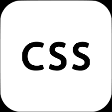
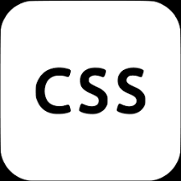
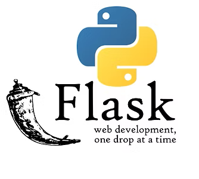
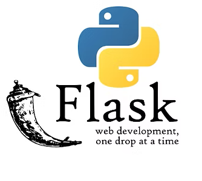
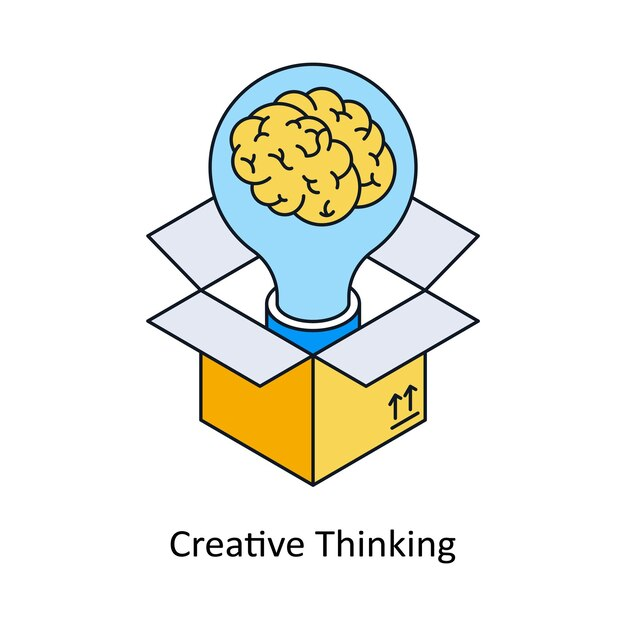
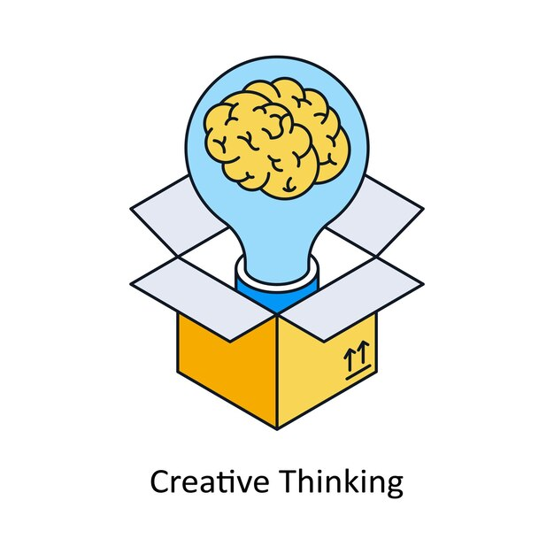

About Me
Code with Purpose. Projects with Soul.
“Technology is best when it brings people together — and even better when it uplifts them.”
I’ve been around computers since I was 1 year old — literally. My dad’s a software engineer, so tech was part of my environment before I even knew how to spell it. From a young age, I was that kid who’d play PC games, dig into cheat codes, explore game files, and later try to exploit bugs — not to break things, but just to understand how they worked.
By the time I hit 11th grade, YouTube became my teacher. I explored everything from Kali Linux to basic penetration testing. I didn’t always finish what I started, but I was always learning, always curious.
My real turning point came during undergrad, when one of my professors sparked my interest in Python. That’s when I really dove into coding — learning machine learning, AI, and building projects I was actually proud of. Some worked great, some failed — but every one of them taught me something.
After finishing my undergrad, I moved to the U.S. to chase bigger opportunities. And now, here I am — still driven by curiosity, but with a clearer mission: I don’t just want to discover what’s already out there — I want to invent something that’s mine.
– Maheshwar Jagadam
 HTML
 CSS
HTML
 CSS
 JavaScript
 Flask
JavaScript
 Flask
 Git & GitHub
AI
 Ethical Tech
Git & GitHub
AI
 Ethical Tech